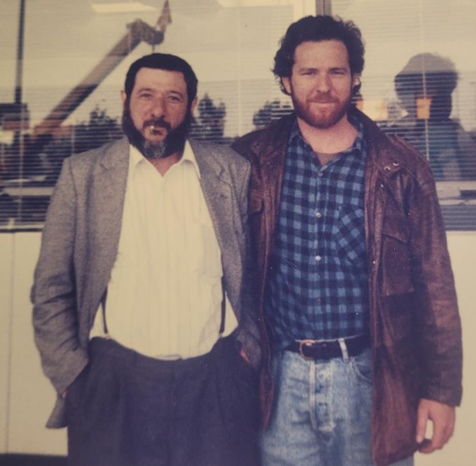

צעיר ותגלית מקרית
ניו יורק, 1962. הווארד לוצוף בן ה-19, סטודנט לקולנוע ומכור להרואין. כמו צעירים רבים בתרבות הנגד של תקופתו, הוא ניסה מגוון חומרים פסיכדליים. כשחבר הציע לו חומר בשם איבוגאין — מסונתז מצמח האיבוגה האפריקאי — לוצוף הסכים לנסות.
מה שבא אחרי כן הוא אחד הסיפורים המרתקים בתולדות הרפואה. לאחר 36 שעות של דימויים חזותיים עזים, עיבוד רגשי ומה שתיאר לאחר מכן כמפגש עמוק עם תולדות חייו — לוצוף יוצא ומגלה שאין לו שום תשוקה להרואין. אין קריז. אין גמילה. התלות הפיזית שאחזה בו — פשוט נעלמה.
"התעוררתי והבנתי שלא חשבתי על הרואין. לא יכולתי לזכור מתי קרה כזה דבר בפעם האחרונה." — הווארד לוצוף
הרחבת התגלית
לוצוף, בחור סקרן ובעל חשיבה מדעית, לא שמר את תגליתו לעצמו. הוא שיתף את האיבוגאין עם שבעה חברים נוספים המכורים להרואין, שחלקם דיווחו על אותה הפחתה דרמטית או הפסקה של תסמיני גמילה ותשוקות.
האיבוגאין פועל בשונה מכל פסיכדלי קלאסי. הוא מפעיל את כל שלושת קולטני האופיאטים, קולטן ה-NMDA, קולטנים ניקוטיניים ומערכות הסרוטונין והדופמין. באופן ייחודי, הוא גם ממריץ שלושה חלבונים נוירוטרופיים קריטיים — BDNF, GDNF ו-NGF — המקדמים את צמיחת מערכת העצבים המרכזית ואת הנוירופלסטיות העומדת בבסיס ההתאוששות ארוכת הטווח מהתמכרות.
חיים שהוקדשו לאיבוגאין
לוצוף הורשע ב-1968 בשלוש עבירות של מכירת LSD — והפך לאמריקאי הראשון שנשלח לכלא בגין עבירות LSD. הוא ריצה שמונה עשר חודשים. זה רק העמיק את מחויבותו למען אלה שנכשלה בהם מדיניות הסמים המפלילה.
ב-1983 הקים לוצוף את קרן נורה וינר, על שם סבתו האהובה, ניצולת שואה. ב-1985 הוענק לו הפטנט הראשון שלו: שיטה מהירה להפסקת תסמונת ההתמכרות לנרקוטיקים. ארבעה פטנטים נוספים — לקוקאין, אלכוהול, ניקוטין ופוליממכרות — הוגשו ואושרו בין 1985 ל-1992.
מאחר שלא יכול היה לנהל מחקר קליני בארצות הברית — שם סווג האיבוגאין כסם Schedule I ב-1970 — עבר לוצוף עם עבודתו להולנד, שם נשאר האיבוגאין חוקי. ב-1993, לאחר שנים של עצמאות ותמיכה, אישר ה-FDA את הניסוי הקליני הראשון לאיבוגאין בארצות הברית.
נורמה לוצוף: האדריכלית שמאחורי התנועה
לצד הווארד בכל שלב עמדה אשתו, נורמה לוצוף. הווארד ונורמה נישאו ב-1964 ושניהם סיימו את לימודיהם בבית הספר לקולנוע של NYU ב-1976. נורמה שימשה כמנהלת הראשית של הקבוצה — כפי שכינו את עצמם שותפיהם הקרובים — וחכמתה הייתה בלתי חסרת ערך. שוב ושוב, שיפוטה החד עזר לתנועה לנווט בין עוינות בירוקרטית, מתחים פנימיים ושטח לא מוכר של בניית פרדיגמת טיפול מאפס.
כפי שכתב בועז וכטל, שעבד לצד שניהם: "נורמה הייתה, ועדיין היא, דמות מרכזית בתנועת האיבוגאין, המספקת חכמה ועצה נבונה לקבוצה ולאנשים סביבה." תפקיד זה — אסטרטגי, מייצב, הכרחי — הוא תפקיד שנדיר שמקבל הכרה נאותה בסיפורי ההיסטוריה המתמקדים בפריצות דרך מדעיות.
תמכו בנורמה לוצוף — אחת הגיבורות הלא מוערכות של תנועת האיבוגאין ושותפת לעבודת חייו של הווארד. אנא שקלו לתרום לקמפיין GoFundMe שלה.
תמכו ב-GoFundMe של נורמהבוב סיסקו — רוברט ראנד: האיש שהפך זאת למציאות
דמות שלישית מרכזית בהיסטוריה המוקדמת של האיבוגאין, שנדיר שמוזכרת מחוץ לחוג הפנימי, היא בוב סיסקו, הידוע גם בשם רוברט ראנד. מומחה יחסי ציבור שהפך לפרה-משפטן — ובמעשים, ל"פרה-לא-חוקי" כפי שמתאר אותו וכטל — סיסקו החל לעבוד כיועץ PR למשפחת לוצוף ב-1985. באותה שנה שלושתם טסו יחד לגבון, נפגשו עם הנשיא עומר בנגו והבטיחו את האספקה הראשונה של קליפת שורש איבוגה באיכות גבוהה לעיבוד בבלגיה.
סיסקו עצמו היה מכור קשה לקוקאין, ניקוטין ואלכוהול כאשר וכטל פגש אותו לראשונה ב-1986. השינוי שעבר סיסקו לאחר שקיבל טיפול איבוגאין שניתן לו על ידי לוצוף היה מדהים. כשביקר אצלו וכטל בהמשך, מצא איש נקי מכל חומרים קשים — ועם תופעת לוואי רוחנית בלתי צפויה: סיסקו הפך ליהודי דתי שמתפלל בבית כנסת כל בוקר.
סיסקו המשיך להיות אחד ספקי הטיפול החזיתיים של התנועה המוקדמת, ונסע להולנד לבדו ב-1990 לטיפול בניקו אדריאנס, מייסד ה-Junkiebond ההולנדי — טיפול שעורר גל עממי של שימוש באיבוגאין ברחבי רוטרדם. סיסקו גם הפיק את "תשעת תיקי המקרים" המקוריים שסיפקו ל-NIDA ראיות מספיקות להשקת תוכנית מחקר טרום-קלינית של 5 מיליון דולר ב-1991.
המפגש שעיצב את ההיסטוריה: לוצוף ווכטל
בסוף שנות ה-80, החוקר והפעיל הישראלי בועז וכטל — לשעבר חובש קרבי ועוזר אטשה צבאי בשגרירות הישראלית בוושינגטון — הצטרף לקבוצה כחבר רביעי. הוא וסיסקו הקימו את ICASH (הקואליציה הבינלאומית לעזרה עצמית לנרקומנים), ופעלו כצוות טיפול תת-קרקעי בסקווטים של אמסטרדם, דירות ומלונות כוכב אחד ברוטרדם.

שיתוף הפעולה של וכטל עם לוצוף הוביל ב-2003 לפרסום המדריך הראשון לטיפול באיבוגאין: סינון, בטיחות, ניטור וטיפול לאחר — המדריך הקליני המגדיר שמרכזי טיפול ברחבי העולם עדיין מסתמכים עליו.
מורשת לוצוף
הווארד לוצוף נפטר ב-2010 בגיל 66, לאחר שהקדיש ארבעה עשורים מחייו לאיבוגאין. הוא לא זכה לראות את מחקר סטנפורד, את השקעת טקסס בסך 50 מיליון דולר, ולא את התנועה הגוברת של ווטרנים ומשפחות הדורשים גישה לאיבוגאין בארצות הברית, קנדה וישראל. אך כל מה שקורה כיום מוביל ישירות לאותו צעיר בניו יורק שהתעורר בוקר אחד, חופשי מבלי לצפות זאת, והחליט לספר זאת לעולם.
בקרן האיבוגאין של ישראל אנו מכבדים את מורשתו של הווארד לוצוף — ואת מורשתם של נורמה, סיסקו, וכטל וכל החלוצים הראשונים — בכל יום. הריפוי שאנו מסנגרים עליו — של חיילים, ניצולים וכל מי שחי תחת כובד הטראומה — מתחיל במתנה שלהם.